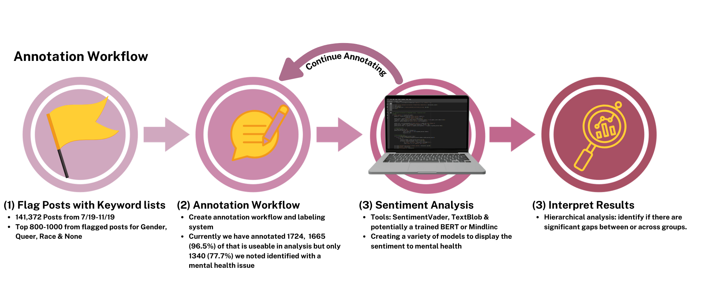

Using Sentiment Analysis to measure perception of mental health across different platforms.
Fall 2025 CSCI 5541 NLP: Class Project - University of Minnesota
Golden Data Retrievers
Jiyu Huang
Ziqi Zhou

Kylie Dyke
Jiyu Huang
Ziqi Zhou
Kylie Dyke
Mental health is a pressing public health issue, especially for vulnerable populations, yet online discussions often lack demographic context. This limits our ability to understand how different identities experience and express mental health concerns.
We curated and manually annotated Reddit posts for demographic markers (gender, LGBTQ+ identity, racial identity) and applied sentiment analysis using pretrained models (VADER/TextBlob) to assess attitudes toward mental health within these groups.
What did you try to do? What problem did you try to solve? Articulate your objectives using absolutely no jargon.
Mental health issues are a serious global health concern that disproportionately impacts vulnerable populations. Natural language processing (NLP) has been utilized in the sphere of mental health research for information extraction, sentiment analysis and emotion detection. One rich area of data mining for mental health research are social media platforms like Reddit, that provide spaces where individuals anonymously discuss mental health. However, this anonymity creates an analytical challenge: the lack of demographic information makes it difficult to analyze how different factors influence sentiments toward mental health. Current sentiment analysis approaches often apply a generalized perspective without considering demographic factors, limiting our understanding of unique challenges faced by different groups. In our project we aim to create a workflow of curating a dataset from Reddit and then hierarchically analyze the sentiment towards mental health across the dataset.
How is it done today, and what are the limits of current practice?
Right now, researchers use social media data to study mental health, but most of this data is anonymous and lacks demographic information. This means we miss how specific groups feel or struggle differently, and we can’t spot patterns tied to identity.
Who cares? If you are successful, what difference will it make?
If we’re successful, this will help mental health researchers and advocates better understand the needs of underrepresented groups. It could lead to more targeted support, outreach, and resources for communities that are often overlooked.
What did you do exactly? How did you solve the problem? Why did you think it would be successful? Is anything new in your approach?
We collected Reddit posts related to mental health, specifically from the Reddit Mental Health Dataset (RMHD) on Kaggle. These posts were specifically from the months of August to November of 2019. We wanted to avoid any bias or impact from the COVID-19 pandemic, so utilized the months prior to major worldwide impacts.
These posts were then flagged by an R script with key words for each identity. After flagging, each member of our team worked on manually annotating the self_text (post) with multiple demographic labels. These demographic labels include mental health of the writer of the post and the earlier defined vulnerable populations: gender identity, LGBTQ+ identity, and race identity. This includes marking a binary indicator, details from a predefined list (that was adjusted as needed), and comments for followup or to explain why a flagged term did not result in an inclusion.
After reading a post, the annotator fills in the following columns:
What problems did you anticipate? What problems did you encounter? Did the very first thing you tried work?
Annotating the data was a lot more time consuming and mentally draining than anticipated. Our rigorous labeling of the posts meant we spent more time on each post than anticipated. Especially if the posts were long (approacing our 3000 charachter maximum), confusing or required an extra check by another annotater.

How did you measure success? What experiments were used? What were the results, both quantitative and qualitative? Did you succeed? Did you fail? Why?
We measured success by how many Reddit posts could be clearly annotated with demographic information (gender, LGBTQ+ identity, racial identity) and mental health sentiment. Success also included being able to clean and organize the data for downstream analysis.
We filtered posts for demographic keyword matches and manually annotated them to confirm their relevance. Then we cleaned the data and structured it into separate subsets for each demographic domain (e.g., gender, queer identity) for easier looping and analysis.

How easily are your results able to be reproduced by others? Did your dataset or annotation affect other people's choice of research or development projects to undertake? Does your work have potential harm or risk to our society? What kinds? If so, how can you address them? What limitations does your model have? How can you extend your work for future research?
Our work so far has focused on manually annotating Reddit posts with demographic information, which is a reproducible but time-consuming process. While our method is transparent and can be replicated by others, it requires significant human effort, which may limit broader adoption due to the tedious nature of the task.